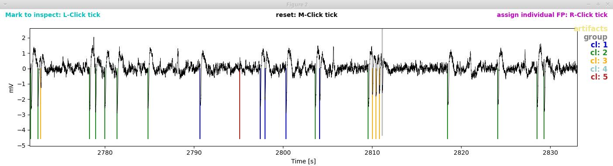

EA detection and classification¶
Spike detection and burst detection/classification are called with a single command. If you are not interested in bursts and prefer to just run the spike detection you can do so by excluding BurstClassificaton from the list of analysis:run in the parameter file at the template or recording specific level (see Setting parameters):

Spike detection is followed by burst classification. Spike detection consists of three consecutive steps: spectral spike detection (the main step) complemented by amplitude based spike detection for reducing false negatives and spike sorting for reducing false positives. Amplitude based spike detection and burst classificaton runs fully automatically. For spectral spike detection and spike sorting there is a GUI that allows you to set parameters manually. Depending on whether you want to use the GUI or rely on default parameters, have interactive set to True or False in the parameter file:

Execute the spike detection and burst classification through the command-line:
> python PEACOC/runthrough/LFPtoBursts.py run_params/my_recording_params.yml
Now your PC may be busy for a few minutes (about 3 min for a 2h recording on an ok Laptop). If you chose not to use a GUI (interactive:False) nothing will pop up and you can skip forward to Output:
Spike detection¶
Spectral spike detection (interactive)¶
Using the GUI for spectral spike detection (EdDetection:interactive:True in the parameter file) two windows will pop up. The first window shows \(n(\theta)\), i.e. the number of spikes as a function of the spectral threshold. The two lines indicate what the algorithm interprets as sensible thresholds. By default, firstcross (the beginning of the plateau region, corresponding to \(\theta_a\) in the paper_) would be chosen, but also bump (the middle of the plateau, corresponding to \(\theta_b\)) might be a good choice.

The second window displays the LFP (bottom), the normalized spectral sum to which the threshold is applied (middle, thresholds shown as horizontal lines) and the spikes detected when applying the threshold (top).

Zoom around in this window to see how happy you are with the performances of each of the thresholds:

And by the way, the missing values in the normalized spectral sum in this example are due to the artifact we had assigned in this region:

Manually adding a threshold: In case you are unhappy with the performance of firstcross and bump, you can add a custom threshold yourself by a double right click on \(n(\theta)\) in the first window:

In this case we added a threshold (green) between firstcross and bump. Upon adding a new threshold for inspection it will also show up in the second window, so you can judge its performance:

Picking a threshold: For setting a threshold click the respective checkbox. Here we pick our manual threshold man1:

To finish the spectral spike detection, click the blue Done button in the first window.
Important
I highly recommend to be rather liberal with the threshold at this stage, ie. opt for a rather low threshold such as firstcross and dont worry about some false positives. False positives will later be removed through Spike sorting (interactive).
Spike sorting (interactive)¶
With spike sorting we try to detect (and later remove) false positives through clustering waveforms. If you are in interactive mode for spike sorting (SpikeSorting:interactive:True in the parameter file), two more windows will pop up now. The panels of the first window show the clusters (waveforms of individual spikes as thin yellowish lines, average waveforms in colors). The clusters are arranged descending from highest to lowest peak-to-peak (PTP) amplitude of the average waveform. By default the cluster with the lowest PTP amplitude would be discharded (cluster 5 shown in red):

The second window shows the LFP trace with spikes annotated (colored vertical lines) according to the cluster to which they were assigned. The grey lines indicate spikes that had not been subjected to clustering because they occurred in dense groups and thus their waveforms could not be separated (we do not worry too much about false positive detections in dense bursts, as they have only very minor influence on burst classification in the end). The area shaded in yellow marks the region we excluded from analyses by assigning an artifact.
{kind=link}
To have a closer look at the spikes in their natural habitat, let’s zoom around in the second window:
{kind=link}
I think clusters 1 to 3 look really decent and cluster 5 clearly is a false positive. But what what about cluster 4?
Marking waveforms for further inspection: There are really few cluster 4 spikes, and it is hard to spot them in the LFP trace (second window). So let’s mark one of those suspicious waveforms by a left click in the first window. The waveform now turns cyan:

… and the waveform gets marked by a cyan triangle in the second window:
{kind=link}
Let’s zoom in on this:

Oh dear, the spikes of cluster 4 appear to belong to an artifact that we did not exclude. To be super correct, we should now edit the artifact file manually. But as this is serves for demonstration purposes only, let’s content ourselves with annotating the spikes belonging to cluster 4 as false positives too.
Picking noise clusters: You can remove clusters as noise by checking the corresponding check boxes in the first window. In our case, we select clusters 4 and 5 to be discarded as false positives.

By clicking the blue Done button, we save our choice and finish this procedure.
Note
If you selected mixed polarity when assiging the polarity, you will see two rows of clusters, one for positive and one for negative polarity. Likewise, the LFP trace will be annotated with spikes belonging to positive clusters (above the zero line) and spikes belonging to negative clusters (below the zero line). By default the fifth cluster of both negative and positive clusters will be discarded. You can choose separately for for positive and negative clusters which clusters to discharge as false positives.
Burst detection and classification¶
The burst classification runs fully automatically by projecting detected spike bursts on a predefined self-organizing map (SOM). For the intrahippocampal kainate mouse model we once calculated a reference SOM on which we project all new datasets. This worked well so far and we included the reference SOM in the toolbox (path: PEACOC/config/som.h5). If you use a different kind of animal model with different types of bursts, you might want to select other features and derive your own SOM. To calculate the SOM itself we used the SOMz-package by Carrasco Kind and Brunner (“SOMz: photometric redshift PDFs with self-organizing maps and random atlas”, doi:10.1093/mnras/stt2456). You can use a your own SOM for the projection method by setting the path to your SOM in the parameter file:
{kind=link}